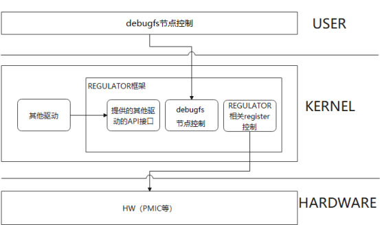
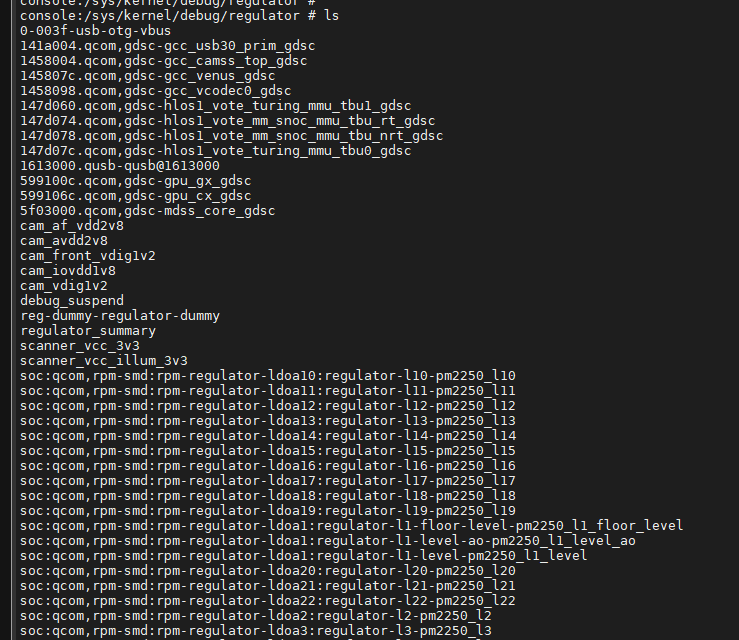

linux 电源管理之regulator机制流程
Regulator模块用于控制系统中某些设备的电压/电流供应。在嵌入式系统（尤其是手机）中，控制耗电量很重要，直接影响到电池的续航时间。所以，如果系统中某一个模块暂时不需要使用，就可以通过regulator关闭其电源供应；或者降低提供给该模块的电压、电流大小。
Regulator的文档在KERNEL/Documentation/Power/Regulator中。
目的
分析regulator结构体
regulator 注册过程
设备使用regulator过程
参考
什么是Regulator
一般来说，soc都会有配套的有限数量的pmu，而Regulator就是这个pmu的抽象，直白来说就是我们通过控制Regulator，进而控制了pmu，从而达到对电的控制。
下图是内核中Regulator的整体框架图，由三部分组成，分别提供了供其他驱动使用的API接口和sysfs口，并可以控制硬件PMIC等这类器件的register，在本文中，将会介绍前两部分。

设备树配置
常用的设备树配置主要涉及4个部分，共5个属性，分别是配置对应的Regulator，设备工作需要的电压范围，设置always-on属性，设置boot-on属性。
下面是一个典型的设备树配置，供大家参考。
xxx {
test-avdd-supply = <&L5A>;
test-avdd-min-uv = <3000000>;
test-avdd-max-uv = <3000000>;
regulator-always-on;
regulator-boot-on;
}
核心API接口
直接参考：
regulator的注册
直接参考：
驱动控制方法
在驱动中需要按照下面的步骤来执行(针对一个Regulator只给一个设备供电的情况)：
通过regulator_get获取对应的Regulator
通过regulator_set_voltage设置电压
通过regulator_is_enabled来判断当前Regulator的状态
根据上一步的结果，如果未enable，则调用 regulator_enable，否则不需要调用regulator_enable
regulator_disable
在实际工作中，我遇到过这样的情景，没有使用regulator_is_enabled进行条件判断，但无意中调用了两次regulator_enable，这样就会导致use_count = 2，在regulator_disable时，由于use_count != 1，从而没有进行disable动作，导致最后发现相应的这路电无法掉电，以下是例子：
void _set_vbus(bool ops)
{
//xxx_charger_dev_enable_otg(g_info->chg1_dev, ops);
if(IS_ERR_OR_NULL(g_info->otg_reg)) {
xxx_charger_otg_power_init();
}
if (ops) {
if(!IS_ERR_OR_NULL(g_info->otg_reg)){
if (!regulator_is_enabled(g_info->otg_reg)) {
regulator_enable(g_info->otg_reg);
chr_info("enable otg\n");
}
}
}
else {
if(!IS_ERR_OR_NULL(g_info->otg_reg)){
if (regulator_is_enabled(g_info->otg_reg)) {
regulator_disable(g_info->otg_reg);
chr_info("disable otg\n");
}
}
}
}
如果不加regulator_is_enabled判断直接regulator_disable，会出错：
[ 119.664190] unbalanced disables for usb-otg-vbus
[ 119.664261] charger soc:charger: pd_tcp_notifier_call sink vbus 0mV 0mA type(0x00)
[ 119.669031] WARNING: CPU: 1 PID: 322 at drivers/regulator/core.c:2401 _regulator_disable+0x180/0x188
[ 119.676491] pd_tcp_notifier_call event = SOURCE_VBUS
[ 119.685588] Modules linked in: wlan(O) machine_dlkm(O) rouleur_slave_dlkm(O) rouleur_dlkm(O) aw87xxx_dlkm(O) pm2250_spmi_dlkm(O) wcd937x_slave_dlkm(O) wcd937x_dlkm(O) mbhc_dlkm(O) tx_macro_dlkm(O) rx_macro_dlkm(O) va_macro_dlkm(O) bolero_cdc_dlkm(O) wsa881x_analog_dlkm(O) wcd9xxx_dlkm(O) wcd_core_dlkm(O) stub_dlkm(O) swr_ctrl_dlkm(O) swr_dlkm(O) pinctrl_lpi_dlkm(O) usf_dlkm(O) native_dlkm(O) platform_dlkm(O) q6_dlkm(O) adsp_loader_dlkm(O) apr_dlkm(O) snd_event_dlkm(O) q6_notifier_dlkm(O) q6_pdr_dlkm(O)
[ 119.690614] pd_tcp_notifier_call source vbus 0mV
[ 119.735064] CPU: 1 PID: 322 Comm: kworker/1:4 Tainted: G W O 4.19.157 #11
[ 119.735067] Hardware name: Qualcomm Technologies, Inc. Scuba IOT IDP (DT)
[ 119.735079] Workqueue: events do_vbus_work
[ 119.735085] pstate: 60400005 (nZCv daif +PAN -UAO)
[ 119.735091] pc : _regulator_disable+0x180/0x188
[ 119.735095] lr : _regulator_disable+0x17c/0x188
[ 119.735097] sp : ffffff800c7cbcf0
[ 119.735099] x29: ffffff800c7cbcf0 x28: ffffffe0ff692330
[ 119.735109] x27: ffffffa4ad59c018 x26: 00000000ff696a05
[ 119.739752] pd_tcp_notifier_call - source vbus 0v output
[ 119.747650] x25: 0000000000000000 x24: ffffffe0dc386010
[ 119.747654] x23: ffffffa4ad925f40 x22: ffffffe0ff692300
[ 119.747658] x21: ffffffe0dd5d60b8 x20: 00000000fffffffb
[ 119.747662] x19: ffffffe0dd5d6000 x18: 0000000000000034
[ 119.747666] x17: ffffffa4adc2d000 x16: 000000000000003a
[ 119.747669] x15: ffffffa4aca13ba8 x14: 0000000000003930
[ 119.747674] x13: 0000000000000030 x12: 0000000000000000
[ 119.754490] xxx_CHG: vbus_off
[ 119.758579] x11: 70e2f5a212d0d500 x10: 70e2f5a212d0d500
[ 119.758583] x9 : 70e2f5a212d0d500 x8 : 70e2f5a212d0d500
[ 119.758587] x7 : 2073656c62617369 x6 : ffffffa4adc2f620
[ 119.758590] x5 : 0000000000000000 x4 : 000000000000000c
[ 119.758594] x3 : ffffff800c7cb968 x2 : ffffffa4ab696a98
[ 119.758599] x1 : ffffffa4ab755ab8 x0 : 0000000000000024
[ 119.763420] xxx_CHG: issue work, ops<0>, delay<0>
[ 119.767957] Call trace:
[ 119.767970] _regulator_disable+0x180/0x188
[ 119.767973] regulator_disable+0x34/0x80
[ 119.767978] _set_vbus+0x118/0x1d0
[ 119.767982] do_vbus_work+0x20/0x28
[ 119.767988] process_one_work+0x278/0x458
[ 119.768004] worker_thread+0x26c/0x4c0
[ 119.772589] pd_tcp_notifier_call event = EXT_DISCHARGE
[ 119.775872] kthread+0x13c/0x150
[ 119.775878] ret_from_fork+0x10/0x1c
[ 119.775881] ---[ end trace 7d8500c1f26621ee ]---
[ 119.775992] xxx_CHG: 3vdd regulator dts not match
[ 119.781310] charger soc:charger: pd_tcp_notifier_call ext discharge = 1
[ 119.786675] ------------[ cut here ]------------
调试节点
此处我主要给大家介绍下sys节点的调试方式。节点的路径是/sys/kernel/debug/regulator/，在这个路径下面，大家会看到很多Regulator，如下图所示：

以下是我添加的otg节点：
/sys/kernel/debug/regulator/0-003f-usb-otg-vbus